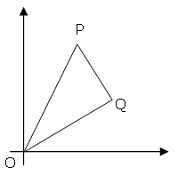

Right triangles with integer coordinates
Problem 91
The points P (x1, y1) and Q (x2, y2) are plotted at integer co-ordinates and are joined to the origin, O(0,0), to form ΔOPQ.

There are exactly fourteen triangles containing a right angle that can be formed when each co-ordinate lies between 0 and 2 inclusive; that is,
0 ≤ x1, y1, x2, y2 ≤ 2.

Given that 0 ≤ x1, y1, x2, y2 ≤ 50, how many right triangles can be formed?